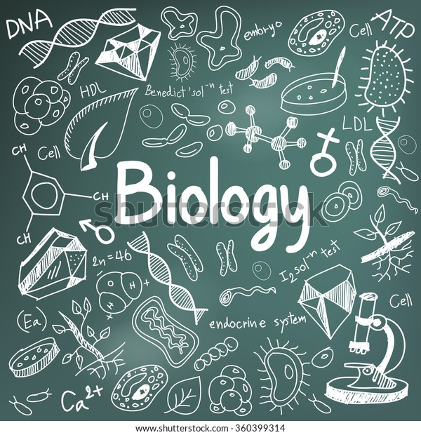

Biology

Back To Main
All information is from Britannica
Look There for more information.
- Introduction
- Basic Concepts of Biology
Introduction
biology, study of living things and their vital processes. The field deals with all the physicochemical aspects of life. The modern tendency toward cross-disciplinary research and the unification of scientific knowledge and investigation from different fields has resulted in significant overlap of the field of biology with other scientific disciplines. Modern principles of other fields—chemistry, medicine, and physics, for example—are integrated with those of biology in areas such as biochemistry, biomedicine, and biophysics.
Biology is subdivided into separate branches for convenience of study, though all the subdivisions are interrelated by basic principles. Thus, while it is custom to separate the study of plants (botany) from that of animals (zoology), and the study of the structure of organisms (morphology) from that of function (physiology), all living things share in common certain biological phenomena—for example, various means of reproduction, cell division, and the transmission of genetic material.
Biology is often approached on the basis of levels that deal with fundamental units of life. At the level of molecular biology, for example, life is regarded as a manifestation of chemical and energy transformations that occur among the many chemical constituents that compose an organism. As a result of the development of increasingly powerful and precise laboratory instruments and techniques, it is possible to understand and define with high precision and accuracy not only the ultimate physiochemical organization (ultrastructure) of the molecules in living matter but also the way living matter reproduces at the molecular level. Especially crucial to those advances was the rise of genomics in the late 20th and early 21st centuries.
Cell biology is the study of cells—the fundamental units of structure and function in living organisms. Cells were first observed in the 17th century, when the compound microscope was invented. Before that time, the individual organism was studied as a whole in a field known as organismic biology; that area of research remains an important component of the biological sciences. Population biology deals with groups or populations of organisms that inhabit a given area or region. Included at that level are studies of the roles that specific kinds of plants and animals play in the complex and self-perpetuating interrelationships that exist between the living and the nonliving world, as well as studies of the built-in controls that maintain those relationships naturally. Those broadly based levels—molecules, cells, whole organisms, and populations—may be further subdivided for study, giving rise to specializations such as morphology, taxonomy, biophysics, biochemistry, genetics, epigenetics, and ecology. A field of biology may be especially concerned with the investigation of one kind of living thing—for example, the study of birds in ornithology, the study of fishes in ichthyology, or the study of microorganisms in microbiology.
Basic Concepts of Biology
Unity
All living organisms, regardless of their uniqueness, have certain biological, chemical, and physical characteristics in common. All, for example, are composed of basic units known as cells and of the same chemical substances, which, when analyzed, exhibit noteworthy similarities, even in such disparate organisms as bacteria and humans. Furthermore, since the action of any organism is determined by the manner in which its cells interact and since all cells interact in much the same way, the basic functioning of all organisms is also similar.
There is not only unity of basic living substance and functioning but also unity of origin of all living things. According to a theory proposed in 1855 by German pathologist Rudolf Virchow, “all living cells arise from pre-existing living cells.” That theory appears to be true for all living things at the present time under existing environmental conditions. If, however, life originated on Earth more than once in the past, the fact that all organisms have a sameness of basic structure, composition, and function would seem to indicate that only one original type succeeded.
A common origin of life would explain why in humans or bacteria—and in all forms of life in between—the same chemical substance, deoxyribonucleic acid (DNA), in the form of genes accounts for the ability of all living matter to replicate itself exactly and to transmit genetic information from parent to offspring. Furthermore, the mechanisms for that transmittal follow a pattern that is the same in all organisms.
Whenever a change in a gene (a mutation) occurs, there is a change of some kind in the organism that contains the gene. It is this universal phenomenon that gives rise to the differences (variations) in populations of organisms from which nature selects for survival those that are best able to cope with changing conditions in the environment.
Evolution
In his theory of natural selection, which is discussed in greater detail later, Charles Darwin suggested that “survival of the fittest” was the basis for organic evolution (the change of living things with time). Evolution itself is a biological phenomenon common to all living things, even though it has led to their differences. Evidence to support the theory of evolution has come primarily from the fossil record, from comparative studies of structure and function, from studies of embryological development, and from studies of DNA and RNA (ribonucleic acid).
Diversity
Despite the basic biological, chemical, and physical similarities found in all living things, a diversity of life exists not only among and between species but also within every natural population. The phenomenon of diversity has had a long history of study because so many of the variations that exist in nature are visible to the eye. The fact that organisms changed during prehistoric times and that new variations are constantly evolving can be verified by paleontological records as well as by breeding experiments in the laboratory. Long after Darwin assumed that variations existed, biologists discovered that they are caused by a change in the genetic material (DNA). That change can be a slight alteration in the sequence of the constituents of DNA (nucleotides), a larger change such as a structural alteration of a chromosome, or a complete change in the number of chromosomes. In any case, a change in the genetic material in the reproductive cells manifests itself as some kind of structural or chemical change in the offspring. The consequence of such a mutation depends upon the interaction of the mutant offspring with its environment.
It has been suggested that sexual reproduction became the dominant type of reproduction among organisms because of its inherent advantage of variability, which is the mechanism that enables a species to adjust to changing conditions. New variations are potentially present in genetic differences, but how preponderant a variation becomes in a gene pool depends upon the number of offspring the mutants or variants produce (differential reproduction). It is possible for a genetic novelty (new variation) to spread in time to all members of a population, especially if the novelty enhances the population’s chances for survival in the environment in which it exists. Thus, when a species is introduced into a new habitat, it either adapts to the change by natural selection or by some other evolutionary mechanism or eventually dies off. Because each new habitat means new adaptations, habitat changes have been responsible for the millions of different kinds of species and for the heterogeneity within each species.
The total number of extant animal and plant species is estimated at between roughly 5 million and 10 million; about 1.5 million of those species have been described by scientists. The use of classification as a means of producing some kind of order out of the staggering number of different types of organisms appeared as early as the book of Genesis—with references to cattle, beasts, fowl, creeping things, trees, and so on. The first scientific attempt at classification, however, is attributed to the Greek philosopher Aristotle, who tried to establish a system that would indicate the relationship of all things to each other. He arranged everything along a scale, or “ladder of nature,” with nonliving things at the bottom; plants were placed below animals, and humankind was at the top. Other schemes that have been used for grouping species include large anatomical similarities, such as wings or fins, which indicate a natural relationship, and also similarities in reproductive structures.
Taxonomy has been based on two major assumptions: one is that similar body construction can be used as a criterion for a classification grouping; the other is that, in addition to structural similarities, evolutionary and molecular relationships between organisms can be used as a means for determining classification.